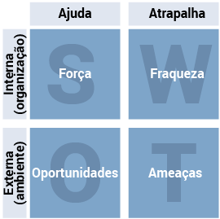
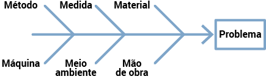
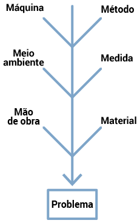
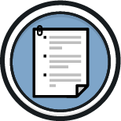
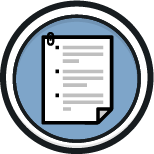

Por que um profissional de ciências contábeis precisa entender planejamento estratégico?
O planejamento é o instrumento que mostra a direção do negócio, ou seja, onde a empresa quer chegar. Ele prioriza quais são as estratégias e ações direcionadas a atingir o objetivo principal estabelecido, tendo como base a missão, a visão e os valores da empresa. A cada final de ano, as empresas realizam a revisão das ações estabelecidas no planejamento estratégico, para saberem se os objetivos estão sendo alcançados.
Antigamente, as estratégias eram pensadas e estruturadas para serem seguidas e mensuradas a cada cinco anos. Atualmente, em virtude das novas tecnologias e dos métodos de agilidade aplicados aos negócios, existem estratégias que são realizadas para serem avaliadas em prazos entre seis meses e um ano, inclusive porque a economia atual está cada vez mais volátil e inconstante.
A contabilidade oferece as informações necessárias para que o empreendedor tenha controle sobre o próprio trabalho. Quanto às rotinas diárias, é o contador quem orienta o empreendedor a tomar as melhores decisões. Portanto, ter uma ideia de como é elaborado um planejamento estratégico é importante para que a equipe tenha clareza em relação ao que é preciso desenvolver para buscar cargos e salários melhores dentro da empresa.
De acordo com Chiavenato (2020), planejamento é o processo de tomar decisões sobre o futuro. É interpretar a missão organizacional e estabelecer os objetivos da organização, bem como os meios necessários para a realização desses objetivos.
Um dos métodos mais utilizados atualmente, que expõe os objetivos do negócio de uma maneira lógica, clara e objetiva, é o Canvas, que significa “quadro”. Nessa ferramenta, são transferidos os dados de pesquisa, as ideias e as decisões referentes à estratégia de negócios da organização. É um modelo prático, dinâmico e inovador de plano de negócios.
Parcerias principais: principais fornecedores e parceiros necessários
Atividades-chave: principais serviços para executar a proposta de valor da empresa
Principais recursos: ativos necessários para fazer o negócio funcionar
Proposta de valor: oferta de valor do negócio aos clientes
Relacionamento com clientes: estratégias que serão utilizadas como diferenciais para conquistar os clientes
Canais: caminhos que a empresa utilizará para se comunicar e entregar valor ao cliente e os meios pelos quais o cliente poderá interagir com o negócio
Segmento de clientes: quais os clientes mais importantes para o negócio
Estrutura de custos: consequências monetárias, ou seja, os gastos para a operacionalização do empreendimento
Fontes de receita: como a empresa ganha dinheiro, quais são os fluxos de receita.
O Canvas está dividido em nove quadros, no primeiro, localizado acima e à esquerda, aparece o título de parcerias principais; ao lado deste quadro, à direita, atividades-chave; abaixo aparece o quadro com os principais recursos; no próximo, ao lado, apresenta-se a proposta de valor; ainda à direita, o relacionamento com os clientes; abaixo, os canais; no rodapé do quadro geral, no canto esquerdo, a estrutura de custos, e por último, no lado direito, as fontes de renda.
Na vida pessoal, todas as pessoas têm sua missão, que também pode ser chamada de propósito; é a resposta à pergunta “por que você faz o que faz?”. Propósito ou missão de vida é o que motiva as pessoas a levantarem todos os dias, é o que faz o coração pulsar. As empresas, por sua vez, também atuam com essa ideia para que consigam direcionar seus objetivos e motivar colaboradores.
Para saber mais sobre planejamento estratégico, assista ao vídeo a seguir:

A estratégia tem que ser traduzida em planos e projetos específicos. Em cada caso, é preciso definir primeiramente estes itens essenciais para uma empresa, os quais são:
É a razão pela qual a empresa existe e que mostra o caminho que será percorrido.
É o que a empresa deseja ser no futuro, aonde ela quer chegar.
Representam as convicções dominantes, as crenças básicas, aquilo em que as pessoas da organização acreditam
Além disso, é preciso saber:
Existem várias ferramentas que podem auxiliar você na construção do planejamento.
“Olhar para dentro de casa e do mercado” é fundamental em caso de solicitação de estudo de viabilidade do negócio.
Uma das ferramentas mais eficazes e utilizadas para buscar dados sobre a organização é a matriz SWOT. Por meio dela, é possível realizar uma análise de quais são os pontos que precisam de maior atenção na construção do planejamento estratégico, considerando os ambientes internos e externos da empresa, e, com isso, avaliar o grau de competividade de uma organização frente à concorrência.
Veja a seguir um modelo sugerido para que você organize uma matriz SWOT:

Figura 2 – Matriz SWOT
Fonte: LIMA, 2018.
A análise SWOT está dividida em quatro áreas: força e fraqueza na primeira linha, oportunidades e ameaças na segunda. Atrás da palavra “força” consta a letra S; atrás de “oportunidades”, a letra O; atrás de “fraqueza”, a letra W; e atrás de “ameaças”, a letra T. Acima de “força” e de “oportunidades” aparece a palavra “ajuda” e acima de “fraqueza” e “ameaças” a palavra “atrapalha”. Na linha de “força” e “fraqueza” aparecem as palavras “organização interna” e na linha de “oportunidades” e “ameaças” o “ambiente externo”.
A sigla SWOT é o resultado das iniciais das palavras:
Veja a seguir um detalhamento sobre os itens da matriz SWOT:
Strengths (forças)
A sugestão é de que você comece pelas FORÇAS. Defina quais são os fatores positivos da empresa em relação à concorrência, isto é, o que deixa sua empresa em vantagem, como, por exemplo, a localização privilegiada e/ou o uso de tecnologias inovadoras.
Weaknesses (fraquezas)
Depois de avaliar os pontos fortes, cruze a tabela e escreva quais são as FRAQUEZAS da empresa, identificando, assim, os pontos que precisam ser melhorados. Exemplos disso podem ser o descumprimento dos prazos de entrega e a falta de qualificação técnica da equipe.
Opportunities (oportunidades)
Em seguida, identifique quais são as OPORTUNIDADES que o mercado oferece. É um “olhar” para o ambiente externo da organização. Os produtos ou serviços devem ser confeccionados com o objetivo de suprir às necessidades dos consumidores.
Threats (ameaças)
Ao final, escreva quais são as AMEAÇAS que, assim como as oportunidades, estão ligadas a situações externas que podem prejudicar a competitividade da empresa no mercado. A entrada de um novo concorrente ou a crise econômica causada por conta de uma pandemia, por exemplo, podem ameaçar os projetos.
Depois dessa análise profunda do negócio, é possível visualizar quais são os pontos a serem trabalhados durante o planejamento estratégico.
O plano de ação é uma metodologia utilizada para definir metas e objetivos. Nesse documento, devem ser colocadas as atividades a serem realizadas e as pessoas responsáveis que desenvolverão cada uma das etapas. Com isso, a equipe poderá acompanhar o desenvolvimento do projeto e medir o atingimento de resultados.
Colocar a “mão na massa” para a concretização das ideias estabelecidas no planejamento estratégico é o propósito do plano de ação.
A seguir, veja um modelo de como organizar as informações de um plano de ação:
Baixar PDFObjetivos
A primeira etapa é estabelecer aonde se quer chegar! Caso contrário, aplica-se a famosa frase citada no filme Alice no país das maravilhas, (2010): “se você não sabe para onde vai, qualquer lugar serve”. Por isso, comece escrevendo quais são os objetivos, aonde você e sua equipe pretendem chegar, qual o resultado esperado. Depois, liste as tarefas que devem ser realizadas.
Metas
Crie metas mensuráveis, ou seja, as quais possam ser medidas, avaliadas, verificadas se estão percorrendo o caminho traçado. Depois, defina prazos para as entregas: reflita sobre situações cotidianas, que possam ser analisadas, e, com isso, redefina alguma rota, caso seja necessário.
Hoje, com o surgimento de metodologias ágeis no gerenciamento de projetos, é possível estabelecer qual se adapta melhor ao modelo de trabalho da empresa. Por fim, crie uma apresentação clara e objetiva para comunicar à equipe e às lideranças envolvidas.
Outro exemplo de modelo para o gerenciamento de um plano de ação é o Diagrama de Ishikawa, também conhecido como diagrama “espinha de peixe”. O objetivo desse diagrama é elaborar um esquema visual para que a equipe consiga identificar as causas de determinado problema e o efeito que é gerado. Observe a figura a seguir:
 
Figura 3 – Diagrama de Ishikawa
Fonte: ISHIKAWA, 1990.
O diagrama começa pela cauda, na qual ficam localizados o “método” e a “máquina”. Seguindo pelo esqueleto do peixe, na espinha, há a “medida” e o “meio ambiente”; logo depois aparece a “mão de obra” e o “material”, e, na cabeça do peixe, o “problema”.
A estrutura do Diagrama de Ishikawa, estrutura que lembra a forma de uma espinha de peixe, foi um dos primeiros elementos utilizados para a gestão da qualidade. O diagrama analisa seis causas que resultam em um problema. São elas:
É toda a causa que envolve o método no qual está sendo realizado o trabalho, ou seja, são os procedimentos, as regras etc.
Avalia o que está com defeito ou funcionando com baixa produtividade.
É onde fica a falta de monitoramento e as métricas para a análise do trabalho.
É toda a causa que envolve o meio ambiente, focada, neste caso, no ambiente de trabalho, como falta de espaço ou dimensionamento errado dos equipamentos.
É toda a causa que envolve o material que estava sendo utilizado no trabalho.
Nesta causa, pode ser avaliada a falta de treinamento ou de produtividade da equipe.
Situa-se na “cabeça do peixe”, e é sobre ele que está sendo realizada toda a análise de causa e efeito.
Resumindo, o Diagrama de Ishikawa ajuda na identificação das principais causas para a resolução do problema.
Em se tratando de agilidade no acompanhamento das etapas, existem algumas ferramentas dos métodos ágeis, que são um conjunto de metodologias aplicadas para acelerar o ritmo do processo de desenvolvimento de um projeto ou plano de ação.
Algumas dessas ferramentas são muito utilizadas pelos principais players do mercado, ou seja, aquelas empresas com relevância no ramo em que atuam. Essa utilização tem como objetivo “errar rápido e barato”. Ou seja, à medida que as tarefas vão sendo executadas, a equipe realiza uma análise simultânea das ideias e soluções sugeridas e entrega as demandas por etapas. Assim, caso não haja o retorno esperado, são sugeridas alterações de imediato. A ideia é não esperar o final do processo para saber se a equipe estava realizando os procedimentos corretamente. O resultado é ganho de tempo e produtividade.
Umas das metodologias ágeis mais utilizadas no mundo corporativo é o Scrum, pois ele é eficiente na otimização de processos. Ele é uma forma de gerenciamento voltada à priorização de atividades. O método é muito utilizado em cenários de incertezas, como, por exemplo, a elaboração de um produto que precisa seguir uma ordem de priorização. É uma metodologia que começou nas discussões de projetos na área da tecnologia da informação, mas que acabou sendo introduzida como prática em outros setores das empresas.
Segundo Jeff Sutherland e Ken Schwaber (2019), Scrum é um método que as equipes utilizam para resolver problemas complexos, e, de modo produtivo e criativo, entregam produtos com o mais alto valor possível.
Figura 4 – Scrum
Fonte: <https://www.mindmeister.com/pt>. Acesso em: 6 jul. 2021.
A imagem acima está dividida em 15 retângulos com o título Práticas do Scrum. O primeiro retângulo está na cor azul e traz as palavras “Papéis fundamentais”; logo abaixo aparecem mais três retângulos, um abaixo do outro, com as palavras, “Product owner”, “Scrum master” e “Time scrum”. Ao lado, aparece um retângulo principal, na cor verde, com as palavras “Atividades básicas”; abaixo aparecem mais seis retângulos, colocados de dois em dois, com os nomes: “Planejamento do sprint” e “Execução do Sprint”, “Reuniões diárias” e “Revisão do Sprint”, “Retrospectiva do Sprint” e “Product backlog grooming”. A próxima sequência, ao lado desta, há retângulos de cor marrom, o primeiro, que inicia e direciona a sequência dos demais, é o “Documento e artefatos”, abaixo segue a sequência, um abaixo do outro, “Product backlog”, “Sprint backlog” e “Definição de pronto”.
Observe que as práticas do Scrum estão divididas em:
Os papéis fundamentais mostram as etapas do time que desenvolverá o projeto. Essas etapas referem-se às funções de cada um na equipe:
Product owner é o líder que toma a decisão sobre os recursos que serão utilizados.
Scrum master faz o papel de facilitador. Ele motiva a equipe como um coach.
Time scrum é a equipe propriamente dita, composta por profissionais multidisciplinares.
Aqui é definida a sequência das atividades que serão realizadas.
Product backlog são os documentos de todas as funcionalidades necessárias.
Sprint backlog contém todo o processo do trabalho que será executado.
Definição de pronto auxilia para que a equipe saiba quando e como uma parte da funcionalidade ou do produto deve ser considerada concluída.
O importante é ter em mente que existem vários tipos de plano de ação. Porém, o que todos eles devem ter em comum é o acompanhamento constante de resultados. Para isso, é preciso seguir cinco passos fundamentais: planejamento, execução, monitoramento, encerramento e análise.
Imagine que, no último ano, a empresa de produtos eletrônicos em que você trabalha teve que fazer uma alteração no planejamento estratégico em decorrência de uma grave crise econômica. Com isso, as gerências dos departamentos comercial e financeiro tiveram que redefinir a linha de produtos para que atendesse à demanda do mercado atual.
A fim de iniciar este processo, será preciso estabelecer um plano de ação para que seja colocado em prática um dos objetivos do planejamento estratégico, qual seja, oferecer o produto que mais se adeque ao “novo consumidor”.
Considere que o produto mais pesquisado pelo consumidor nos sites de busca tem sido o equipamento de webcam para a realização de reuniões on-line. Anteriormente, a empresa só vendia peças gerais de computadores e demais utensílios eletrônicos, mas agora a gerência estabeleceu que a organização pretende fazer a venda de webcams para se tornar competitiva frente à concorrência.
Considerando os modelos de plano de ação citados, quais são as ações que você e sua equipe sugerem para que esse objetivo se torne viável?
O cenário mencionado foi apenas um exemplo de quando se torna necessário um plano de ação. Também fica aqui a proposta de reflexão sobre as estratégias que poderiam ser utilizadas para o crescimento do negócio.
Bons estudos!


 
